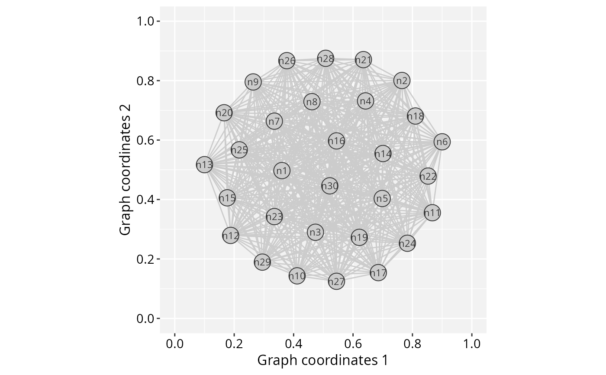
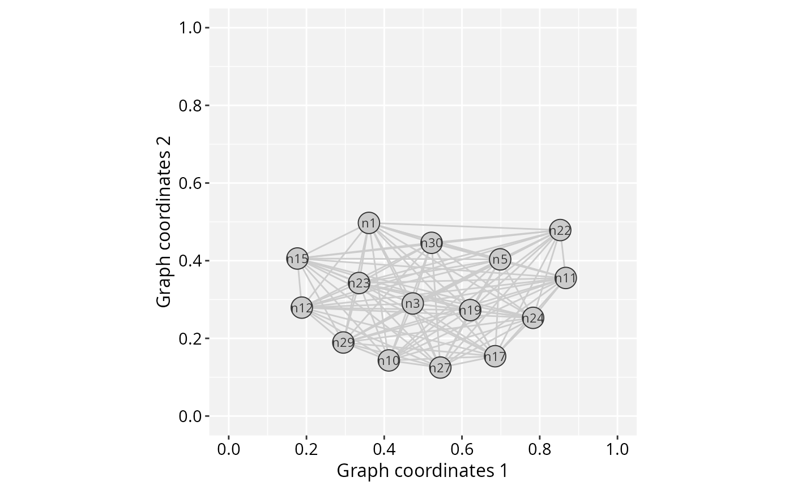

Accessory functions to spatially transform a normalized
GraphSpace object. cropGraphSpace() subsets the plotting
area to a rectangular region; rotateGraphSpace() rotates by a
quarter turn; flipGraphSpace() mirrors horizontally or vertically;
transposeGraphSpace() swaps the x and y axes.
Usage
# S4 method for class 'GraphSpace'
cropGraphSpace(gs, xmin = 0, xmax = 1, ymin = 0, ymax = 1, verbose = TRUE)
# S4 method for class 'GraphSpace'
rotateGraphSpace(gs, clockwise = FALSE, verbose = TRUE)
# S4 method for class 'GraphSpace'
flipGraphSpace(gs, vertical = FALSE, verbose = TRUE)
# S4 method for class 'GraphSpace'
transposeGraphSpace(gs, verbose = TRUE)Arguments
- gs
A normalized
GraphSpaceobject.- xmin
A single number in
[0,1]specifying the lower x-boundary of the plotting area.- xmax
A single number in
[0,1]specifying the upper x-boundary of the plotting area.- ymin
A single number in
[0,1]specifying the lower y-boundary of the plotting area.- ymax
A single number in
[0,1]specifying the upper y-boundary of the plotting area.- verbose
A single logical value specifying to display detailed messages (when
verbose=TRUE) or not (whenverbose=FALSE).- clockwise
A single logical value. If
FALSE(default), the 90-degree turn is counter-clockwise; ifTRUE, clockwise (rotateGraphSpaceonly).- vertical
A single logical value. If
FALSE(default), the flip is horizontal (mirror left-right); ifTRUE, vertical (mirror top-bottom). (flipGraphSpaceonly).
Details
cropGraphSpace() subsets a normalized graph space to a specific
region defined by the cropping boundaries. It recalculates node positions
and background image boundaries to maintain spatial consistency after
cropping, and drops nodes (and edges) that fall outside the window.
rotateGraphSpace(), flipGraphSpace(), and
transposeGraphSpace() are all exact, a coordinate/pixel
permutation, with no resampling, no interpolation, and no risk of
misaligning nodes against the background image.
rotateGraphSpace() is restricted to a single 90-degree turn: apply
it again to its own output for 180 or 270 degrees, e.g.
rotateGraphSpace(rotateGraphSpace(gs)) for 180 degrees. Combine
all three with each other to reach any of the 8 symmetries of a square.
Note
This is an accessory function typically called during
the preprocessing of GraphSpace objects before rendering.
Examples
library(RGraphSpace)
library(igraph)
# Create a star graph
gtoy1 <- make_full_graph(30)
# Create a GraphSpace
gs <- GraphSpace(gtoy1)
#> Validating the 'igraph' object...
#> Vertex attributes 'x' and 'y' missing; computing layout...
#> Vertex attribute 'name' missing; assigning names...
#> Ignoring graph-level attributes: 'name', 'loops'
#> Creating a 'GraphSpace' object...
gs <- normalizeGraphSpace(gs)
#> Normalizing node coordinates to graph space...
gs_crop <- cropGraphSpace(gs, ymax = 0.5)
#> Cropping graph space to x in [0, 1], y in [0, 0.5]...
gs_rot90 <- rotateGraphSpace(gs)
#> Rotating graph space 90 degrees counter-clockwise...
gs_flip <- flipGraphSpace(gs)
#> Flipping graph space horizontally...
gs_t <- transposeGraphSpace(gs)
#> Transposing graph space...
plotGraphSpace(gs, add.labels = TRUE)

plotGraphSpace(gs_crop, add.labels = TRUE)
